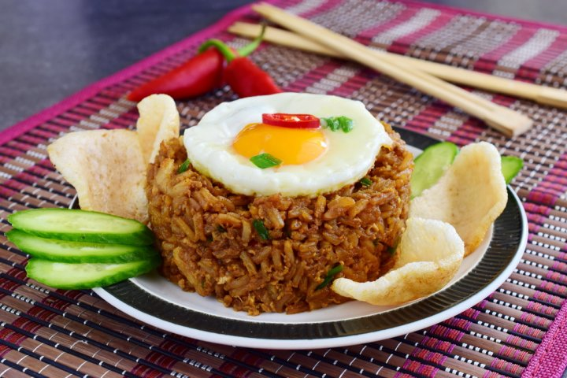

Hidangan enak dan mudah untuk dibuat!
Saat ada sisa nasi, tak jarang kita membuatnya sebagai menu nasi goreng
untuk sarapan. Bukan hanya sisa nasi saja, nasi yang baru matang juga enak
untuk dimasak sebagai nasi goreng. Masakan ini masuk juga dalam daftar
makanan terenak di dunia. Kamu bisa lihat resep berikut untuk membuat nasi
goreng yang enak.
Bahan bahan
- 1 piring nasi putih
- 2 siung bawang putih
- 2 buah bawang merah
- 3 buah cabai rawit
- 1 buah cabai merah
- 2 sdm kecap manis
- 1 sdm saus tomat
- 1 sdm saus sambal
- 1 sdm saus tiram
- 1 sdt garam
- 1/2 sdt merica bubuk
- 1/2 sdt kaldu bubuk rasa ayam
- 1 batang daun bawang dicincang halus
- 1 butir telur ayam
- 2 sdm ayam suwir
- 1 buah sosis ayam diiris tipis
- 3 sdm margarin untuk menumis
Cara membuat
-
Pertama yang bisa kamu lakukan adalah menghaluskan bawang putih dan juga
bawang merah. Haluskan juga cabai rawit serta cabai merah.
-
Siapkan wajan lalu panaskan margarin dan tumis bumbu halusnya sampai
harum.
- Masukkan ayam suwir dan juga sosis lalu tumis sebentar.
- Tambahkan telur dan tumis bersama dengan bumbu.
- Masukkan nasi lalu aduk sampai tercampur rata.
- Tuangi kecap manis, saus tomat dan saus sambal.
-
Kamu juga perlu menuangi saus tiram lalu menaburkan garam, merica dan
kaldu bubuk.
- Aduk sampai nasi berubah dan merata lalu siap disajikan.
Kembali ke atas
Kembali ke halaman utama